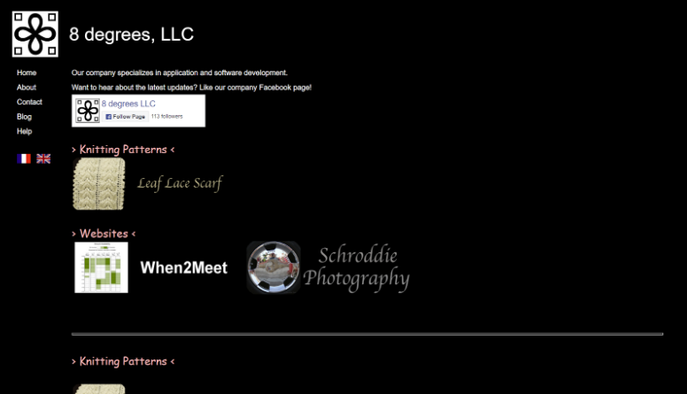
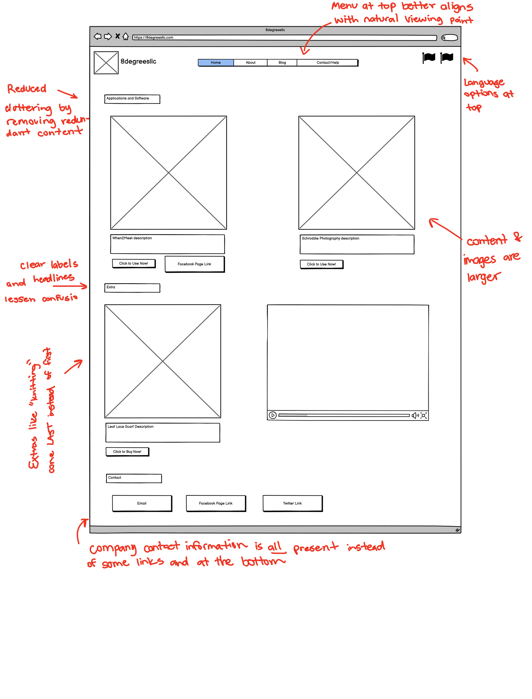
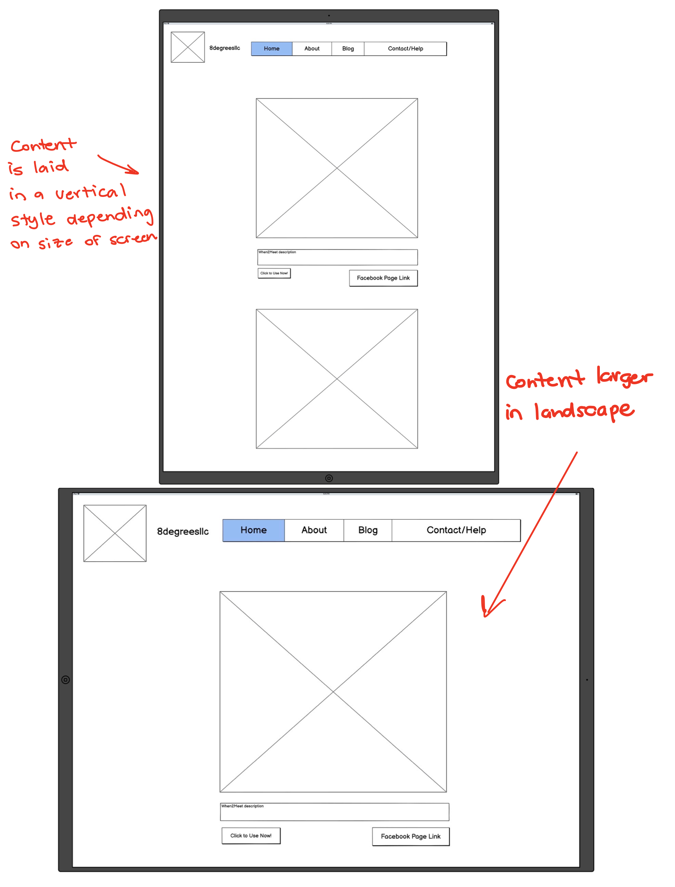
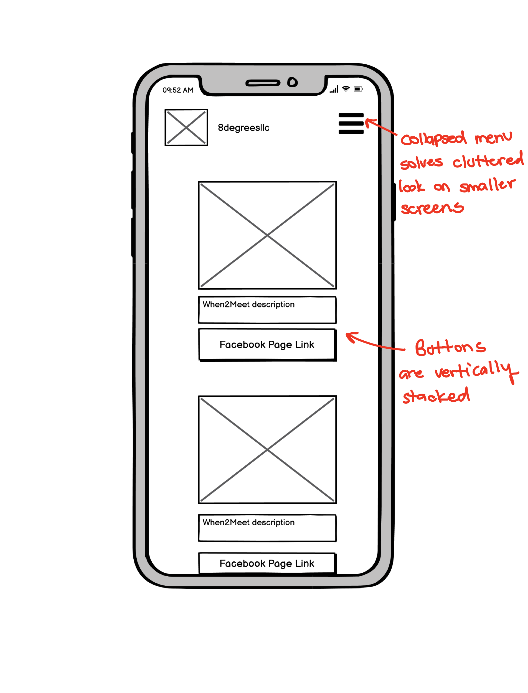
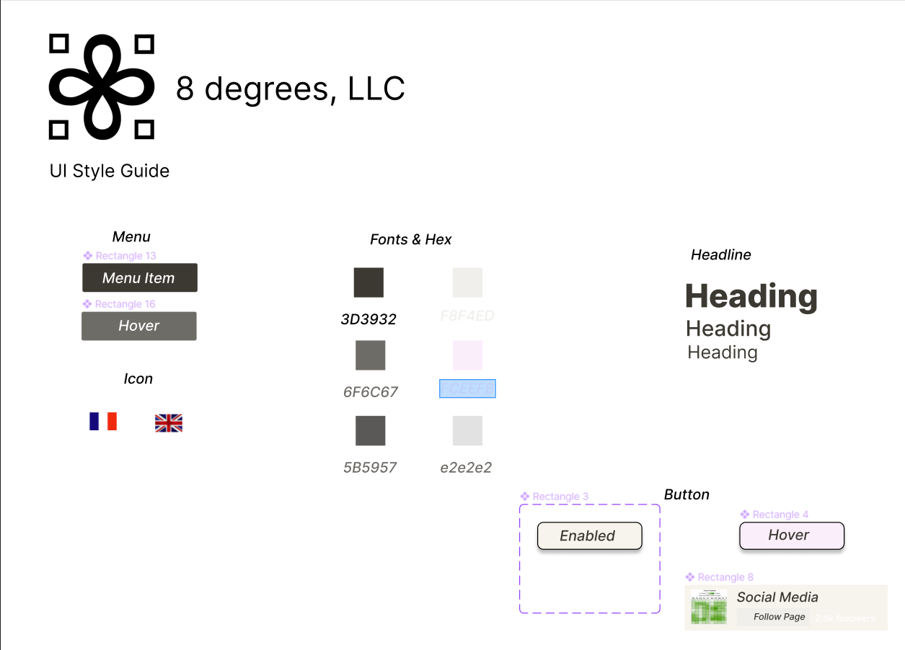
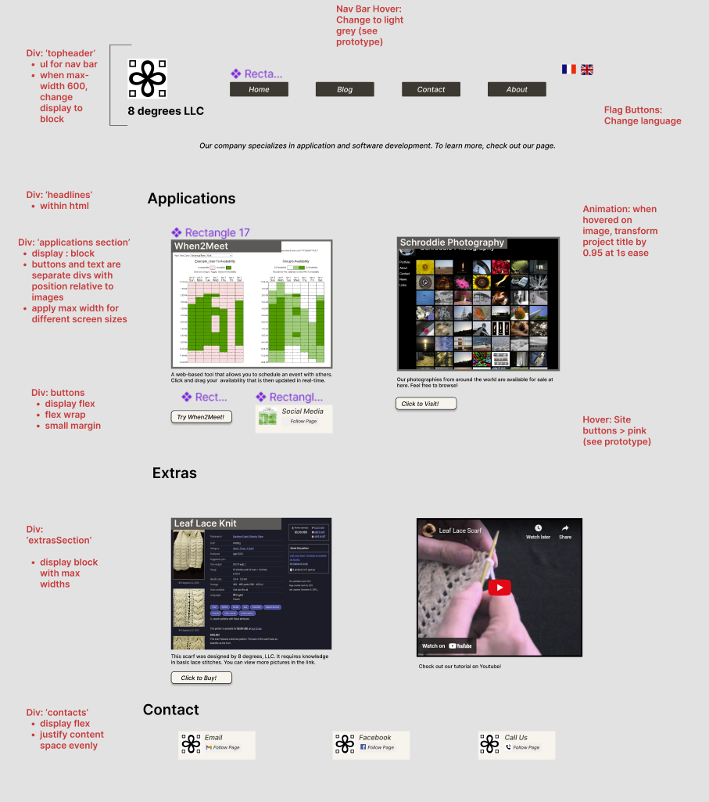
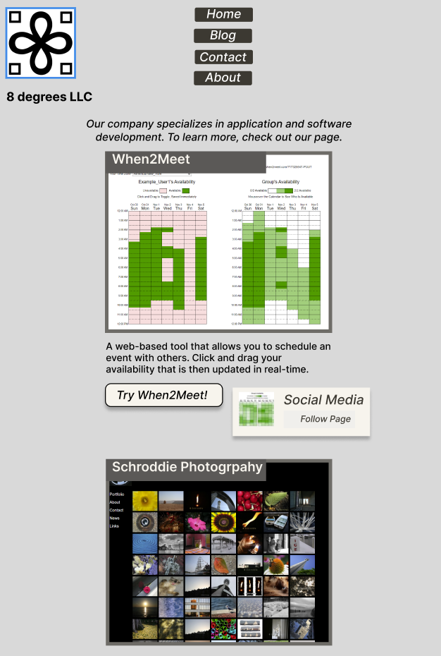
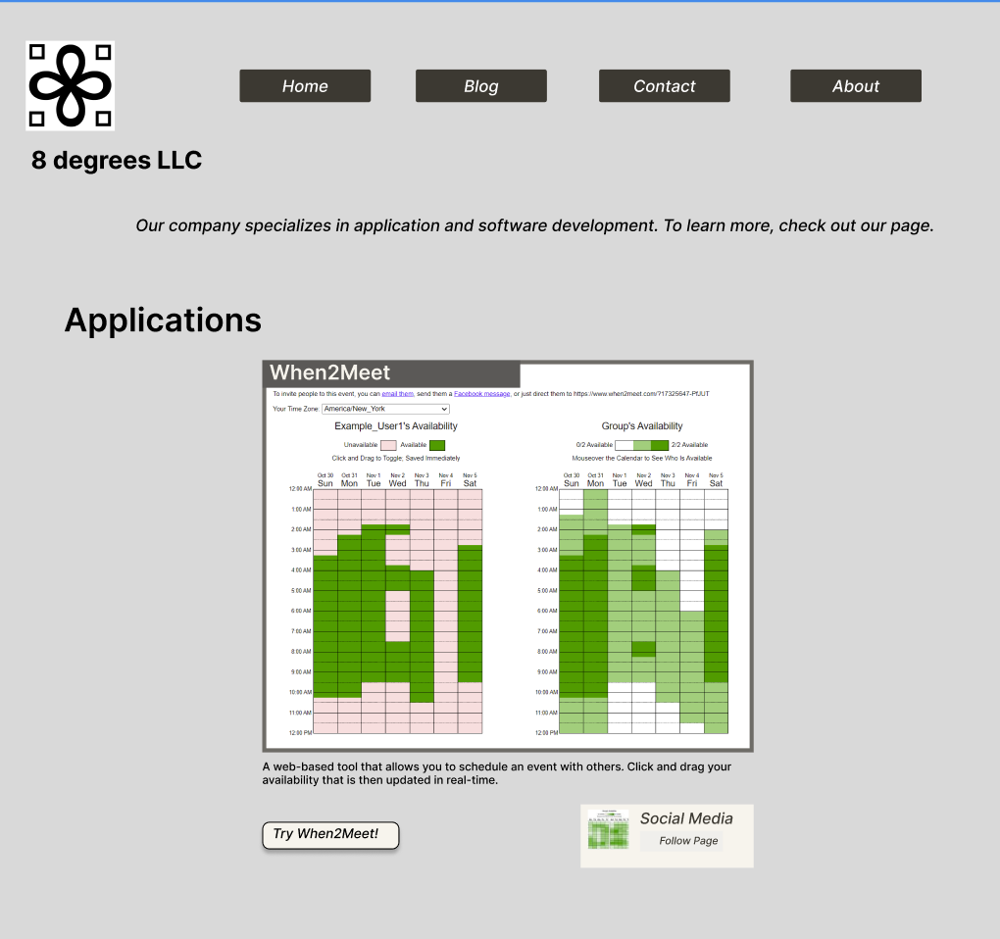
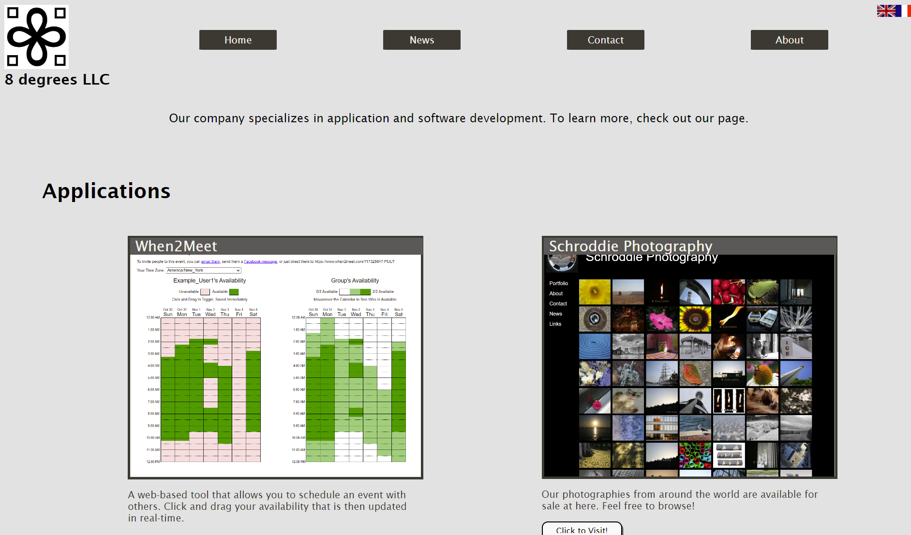

This project explores the workflow of redesigning a simple website. Identifying flaw, hardening skills, analyzing accessibility flaws, and building a responsive website with prototypes are essential to the process behind UI/UX design.
Part 1: Identifying Usability Problems
This part selects the main website of the project. Ideally, it's one that's
public but not made by a large corportation (eg. Google, Facebook). For this project,
8 Degrees LLC company's website was chosen. 8 Degrees is most widely known for their
When2Meet software which is used by a large number of people and organizations.
8 Degrees Overview
I chose this website because When2Meet is a staple for a lot of organizations and its company website doesn’t look polished or taken care of. If I had to guess, I would say this company is no longer active as of 2006.
8 Degrees Website

Identifying Problems
- Confusing interface, buttons and links blend in too well
- Content is not coherent
- Content isn’t clear - what exactly does the company do? Is it still active?
- Links are redundant - some links link to pages with one or two lines of text
- Some images don’t have alt text
- Some divs are not labeled correctly
- Not adaptive to different sized window
Accessibility
Two errors and 15 alerts were detected with the website. Most of them applied to missing metadata such as not specifying a language or including tags for sections for different sections (text or images a direct child of instead of a ,
..etc). I agree with these detections and would even expand it to say that the different headings are not specifically defined properly.
Part 2 Visual Redesign
Low-Fidelity



Design Style

High Fidelity



Part 3: Reponsive Redesign
